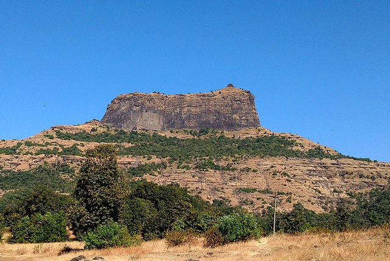
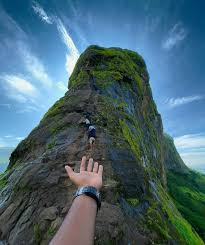
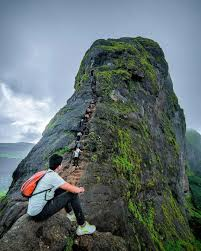

HARIHAR

 
info
Harihar Fort is a historical site located in Nashik, Maharashtra. It is a great attraction for those seeking a short vacation in the lap of nature; its lush greenery and amazing views of breathtaking surroundings act as a stress-busting dose for trekkers. As a result, it is widely known as one of the best places to visit in Maharashtra. From the peak of Harihar fort, you will get an astonishing view of the beauty of Mother Nature’s elongated hilltop. You can view many other forts near Nashik. Despite its narrowness, the Harihar fort trek is quite difficult.
History
Harihar fort or Harihar killa is located in the Trimbakeshwar Mountain Range. The Yadava Dynasty constructed the fort between the 9th and 14th centuries. This fort in Maharashtra has held great importance in preventing trade routes passed through the Gonda Ghat.
Harihar Fort was repeatedly attacked and seized by many invaders before the British Army took control of it. This was one among the several forts owned by the Ahmadnagar Sultanate. Along with the Harihar Fort, many other forts near Nashik like Trimbak, Tringalvadi, and a few other Poona (now Pune) forts were surrendered by Shahaji Bhosale to Khan Zaman in 1636.
Today, the fort is exclusively used as a trekking site. To get to the fort, you must climb a flight of rock-cut steps. It starts from two villages, Harshewadi and Nirgudpada.
TRAKING
The remarkable thing about Harihar Fort Trek is that it appears to be rectangular from the base village. However, it is built on a triangular prism of rock. The rock edges are vertical, which makes this ancient fort stand apart. Because of these vertical steps, the trek is the most popular in all of the Sahyadri Range.
Although the trek to Harihar Fort or Harihar killa is relatively short, it is rather difficult. Your guide will be included to help you throughout your journey. These rock-cut stairs, which make up the last 200 feet of the trip, make for a nerve-wracking climb. It has a total of 200 steps and an 80-degree elevation. Because of the steep climb down and 500-foot drop at one point, the descent is extremely thrilling. The stair's architecture is both diverse and impressive. The valley below can be seen in a spectacular and sometimes frightening way.